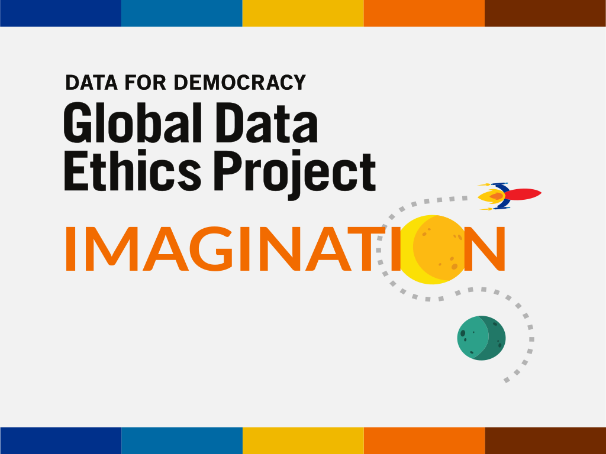

<section class="hero-section">
    <div class ="container">
        <div class="row">
            <!-- <div class ="img-fluid col-12"></div> -->
            <div class="d-flex align-content-center flex-wrap">
                <div class = "col-12 col-sm-3">
                    
                </div>
                <div class="col-12 col-sm-9">
                    <h1>Ethical Imagination</h1>
                    <p>The Ethical Imagination group is part of the the Global Data Ethics Project at Data for Democracy, which is a collective of data practitioners seeking to do data for social good in ethical and inclusive ways. The community at D4D serves as the holding place for the governance and communication of a set of ethical principles that were imagined, created and written through consensus, in the data community for the data community. In our principles, it states “ quote the ethical imagination one”. Ethical Imagination was coined by Laura Noren.</p>
                </div>
            <div>
        </div>
    </div>
</section>

<section>
    <div class="container">
        <div class="row">
            <!-- <div class ="img-fluid col-12"></div> -->
            <div class="d-flex align-content-center flex-wrap">
                <div class="col-12">
                    <h2>As a community of data practitioners, researchers, tech geeks, sci-fi lovers, scientists and many, many more, we believe in the following:
                    </h2>
                    <p>We intend to use all the tools available to us to transform the culture of current tech and data practices, in order to foster an environment of greater inclusivity, equity and thoughtfulness about the history and future implications of our shared work. We know that many of the tools and ways of thinking which are most valuable for this were created outside of the tech world we know so well. </p>
                    <p>We believe that we must connect with artists, writers, directors, comic creators, philosophers, and creative figures from a variety of fields, disciplines, and media, in order to learn about and explore new, inclusive and diverse imagined futures. </p>
                    <p>We wish to imagine a future that looks different from the present we know now, and perhaps even to use this vision to inform and guide our present-day behavior.
                    </p>
                    <p>We crave stories that include paradigms outside of mainstream science fiction. This means that, for example, we want to see groups of her@s collaborating to save the world rather than a lone hero. Alternatively, we want to see narratives that place less emphasis on the work of individuals or even small groups, and instead place greater emphasis on worldbuilding, and complex global systems and balances that form and evolve over generations.</p>
                    <p>We want to see queer-bodied characters. We want to see a world where neither ethnicity, nor nationality nor culture nor gender is tokenized or colonized.</p>
                    <p>We write so that we can inhabit a variety of perspectives, and so that we can be empowered to listen and act with care, compassion, intelligence and empathy when presented with a technological problem.</p>
                    <p>We also feel empowered by the ways that technology connects us globally and wish to use the plurality of experiences to create, question and share speculative stories.</p>
                    <p>We want to have fun and exercise our imagination.</p>
                </div>
            <div>
        </div>
    </div>
</section>

<section class="submissions">
<div class="container">
    <div class="jumbotron jumbotron-fluid jumbotron-ethics">
      <div class="container">
          <div class="row">
            <div class ="col-xs-12">
                <h2 class="text-center">Collaborate with us</h2>
            </div>
        <div class="d-none d-md-flex col-md-12">
        <div class="content-animation">
          <div class="content-animation__container">
            <p class="content-animation__container__text">
              Send
            </p>

            <ul class="content-animation__container__list">
              <li class="content-animation__container__list__item">&nbsp;fiction !</li>
              <li class="content-animation__container__list__item">&nbsp;ur art !</li>
              <li class="content-animation__container__list__item">&nbsp;video !</li>
              <li class="content-animation__container__list__item">&nbsp;comics !</li>
            </ul>
          </div>
          </div>
        </div>
        <div class="col-xs-12 col-lg-8">
            <p class="lead"> Click the button to submit fiction, illustration, comic, video clips, art, design, photography to the project.</p>
            <p class="lead">If you have writing, graphics, comics, sketches, artwork or video to share, we will share what you've written via our newsletter, website and social media.</p>
        </div>
            <div class="col-xs-12 col-lg-4">
                <a href="https://docs.google.com/forms/d/e/1FAIpQLSdtij3JmpvJKUOc-BCOaZeoPULBNv61J2RV4IA9nKyzYOwATg/viewform" target="_blank"><button class="btn btn-primary btn-ethics">Submit ideas</button></a>
                </div>
        </div>
      </div>
    </div>

</div>
</section>

<section>
    <section class="hero-section">
        <div class ="container">
            <div class="row">
                <!-- <div class ="img-fluid col-12"></div> -->
                <div class="d-flex align-content-center flex-wrap">
                    <div class="col-12 col-sm-9">
                        <h1>Writing Prompts</h1>
                        <p>In the spirit of folded stories, we have also designed a way to create a series of asynchronous global stories told through github governance and collaboration. If you are interested in participating, click the random idea generator to grab a topic then submit your story via the submit form/button. You can also visit the folded story page and build on the entry(its) you see there, again, submitting your material (writing, art, graphics, video, mp3) via the submission form. Be respectful and creative, and supportive of others’ work. </p>
                        <p>If you are interested in being an editor and helping frame stories, add your name by filling out the submission form here.</p>
                        <p>Join the working group on the D4D slack to share what you’re reading, feeling and thinking about the future.</p>
                    </div>
                    <div class = "col-12 col-sm-3">
                        
                    </div>
                <div>
            </div>
        </div>
</section>

<section class="prompts">
  <div class="jumbotron" id="writing-promps_jumbotron">
    <div class="container-fluid">
      <div class="row">
        <div class="col-md-3">
          <h1>Writing Prompt Generator</h1><br>
              <div>
                  <a id="share" href="https://twitter.com/share" class="twitter-share-button" data-text="Generate a story idea " data-via="D4D" data-size="large"><span class="fa fa-twitter"><i class="fab fa-twitter"></i></span>Tweet Me</a>
                </div>
        </div>
        <div class="col-md-9">
          <h2 id="yourQuote"></h2>
          <p id="yourAuth" class="italic"></p>
                    <button class="btn btn-success btn-lg btn-block" type="submit">Generate a writing prompt</button>
                    <!-- <div class="col-sm-2-offset-1"id="fb-share-button">
                        <span>Share</span>
                    </div> -->
             </div>
            </div>
        </div>
    </div>

    <div class="container">
        <div class ="row">
            <div class="col-12">
               <p>
                    Resource: <a href="https://kripalu.org/resources/what-makes-great-writing-prompt">What makes a great writing prompt</a>,
                    <a href="http://www.bryndonovan.com/2018/05/31/50-science-fiction-plot-ideas-and-writing-prompts/">Science Fiction plot ideas</a><br>
                    Resource: https://www.reddit.com/r/WritingPrompts/
                    Part of NanoWrite month: http://www.justinmclachlan.com/684/sci-fi-writing-prompts/

                    Question 6 scenario taken from “Siri-ously? Free Speech Rights and Artificial Intelligence”, page 3, available at https://scholarlycommons.law.northwestern.edu/cgi/viewcontent.cgi?referer=https://www.google.com/&httpsredir=1&article=1253&context=nulr.

                </p>
            </div>
        </div>
    </div>
</section>
